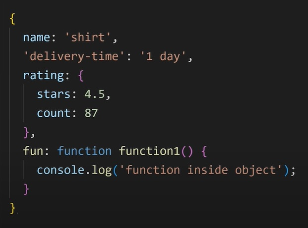

Page Index
Bibliotecas JavaScript
Tipos Primitivos
Tabela de Comandos JavaScript
Operadores Ternários
DOM - Document Object Model
Condições JavaScript
Datas
Repetições
Array / Variáveis Compostas / Vetores
Operadores Ternarios
Objetos JavaScript e JSON
Comandos Úteis
Próximos Passos
Biliotecas JavaScript:
- JQuery
- Angular (Criado pelo Google)
- React (Criado pelo Facebook)
- vue (Angular melhorado)
- Electron
- Ionic
- Cordova
Bibliotecas para Jogos JavaScript:
- Phaser
- PixiJS
- ImpactJS
- melon.js
- CraftyJs
Tipos Primitivos JavaScript
- Number
- String
- Boolean
- Undefined
- Null
- Symbol
- BigInt
COMANDOS JavaScript:
| COMANDO | Função | Característica | console.log(__) | Imprime uma mensagem no console | console.info() | Exibe uma informação no console |
|---|---|---|
| console.warn(__) | Exibe aviso no console | |
| console.error | Exibe mensagem de erro no console | |
window.alert('mensagem'); |
Cria caixa de alerta | Mensagem vai entre as aspas |
window.confirm('mensagem') |
Cria caixa de confirmação | Para armazenar a reposta, usa-se uma variável - let res = confirm(''); |
| window.prompt('mensagem') | Cria caixa prompt de inserção de texto | |
| typeof primitivo | Exibe o tipo primitivo do dado | |
| parseInt(converter) | Converte o número do parâmetro em Inteiro |
let num = '5' let numInteiro = parseInt(num) |
| parseFloat(converter) | Converte para Float (decimal) |
let num = 5; let numFloat = parseFloat(num) |
| Number(converter) | Converte para número |
let num = '42' let numero = Number(num) |
| String(converter) | Converte em String |
let num = 51 let numString = String(num) |
| toString() | Converte em String |
let num = 14 let str = num.toString() |
| Boolean(converter) | Converte em Booleano | Todo valor que não seja 0, NaN, Null, Undefined, false ou string vazia retorna true. let boolValue = Boolean(41) |
| JSON.parse(converter) | Converte String JSON em um objeto JavaScript |
let jsonString = '{"nome": "João", "idade": "30"}' let obj = JSON.parse(jsonString) |
| JSON.stringify(converter) | Converte objeto JavaScript em JSON |
let obj = {nome: 'Maria', idade: 25} let jsonString = JSON.strigify(obj) |
| var.toUpperCase() | Transforma todas as letras em maiúsculas | |
| var.toLowerCase() | Transforma todas as letras em minúsculas | |
| var.length | Mostra número de caracteres | |
| .toFixed(x) | varX define o número de casas decimais | |
| var.replace('x','y') | Troca todos os X da variável por Y |
Somente usado em Strings. let n = '53.40' let nform = n.replace('.',',') |
| Math.random() | Gera um valor aleatório entre 0 ~ 1 | hr |
| checkbox.checked | .checked conferete se um input radio ou input checkbox está marcado, retornando true caso esteja. |
DOM - Document Object Model
O que é
DOM é um Built-in Object que faz com que possamos selecionar, adicionar, alterar e remover elementos HTML através do JavaScript
DOM -> Document Object Model -> Modelo de Objeto de Documento. É o modelo ao qual o documento foi construído.
A maioria dos comandos DOM começa com a palavra document.
Árvore DOM

Fonte: Curso em Video JavaScript - Gustavo Guanabara
Dentro de window.document existem inúmeras funções, ex:
window.document.URL -> retorna URL do siteComandos DOM
| COMANDO | Função | Característica |
|---|---|---|
| document.getELemetsByTagName('nome_tag')[i] | Seleciona o elemento com determinada tag que tenha índice i | |
| document.getElementsByName('nome')[i] | Seleciona elemento pelo nome | |
| document.getElementsByClass('class_name')[i] | Seleciona elemento por classe | |
| document.getElementById('id') | Seleciona um elemento pelo id | |
| document.querySelector('id ou class') | Seleciona elemento por id ou classe | Se for id, usa-se # antes do nome, se for class . antes de nome |
| document.querySelector('[name = "nome"]') | Seleciona elemento por nome | |
| document.querySelectorAll('') | Seleciona todos os elementos correspondentes | |
| document.addEventListener('evento', função) | Adiciona um event listener | |
| document.createElement('nome_da_tag') | Cria um elemento HTML através do JavaScript | |
| elemento.setAttribute('atributo', 'valor') | Adiciona um atributo a um elemento HTML através do JavaScript | Atributos: id, class, src, href, data, |
| elementoPai.appendChild(elementoCriado) | Inserir elemento html criado por JavaScript no DOM | |
| elementoPai.insertBefore(elementoCriado, antesDeQual) | Insere um elemento antes de outro | |
| elemento.innerText = 'texto' | Insere texto dentro de um elemento | |
| elemento.textContent = 'texto' | Insere texto dentro de um elemento | |
| elemento.HTML = 'HTML text' | Insere HTML dentro de elemento | Podemos criar tags dentro do html à vontade |
| document.title = '___' | Muda o nome do docuento para o valor entre aspas |
Event Listeners Mais Usados:
| Evento | Função |
|---|---|
| onclick | Ao clicar |
| onmouseenter | Ao mouse entrar |
| onmouseleave | Ao mouse sair |
| onmousedown | Quando o botão do mouse estiver clicado |
| onmouseup | Quando o botão do mouse levantar |
| onmousemove | Quando o mouse se move pelo elemento |
| onkeydown | Quando as telcas do tecla estiverem baixadas |
| onkeyup | Quando as teclas do teclado levantarem |
| onscroll | Ao rolar a tela para baixo |
| onload | Ao carregar o elemento da página |
| onunload | Ao descarregar elemento da página. (Normalmente quando fechamos a página) |
| onbeforeunload | Antes de descarregar a página |
| onloadstart | Ao começar a carregar |
| onloadend | Ao finalizar o carregamento |
| onloadprogress | durante o carregamento |
| onerror | Ao falhar o carregamento |
| onsubmit | Normalmente adicionado à formulários |
| Evento | Função |
|---|---|
| onchange | Ao mudar. Usado em Selects ou prompts |
| onfocus | Quando o elemento recebe um foco. (O usuário navega até o elemento ou clica nele) |
| onblur | Quando um elemento perde o foco |
| onresize | Quando a janela do navegador é redimencionada |
| oncontextmenu | Quando o botão direito do mouse é clicado |
| ondbclick | Quando o elemento recebe dois cliques consecutivos |
| onselect | Quando o elemento é selecionado |
| oninput | Ao valor de uma entrada ser alterado |
| ondrag | Ao arrastar um elemento da página |
| ondragstart | Ao começar a arrastar um elemento de uma página |
| ondragend | Ao largar o elemento arrastado |
| onhashchange | Ao mudar o hash da URL Usada ao navegar dentro de páginas do mesmo site |
| ontouch | Quando tocar na tela (touchscreen) |
| ontouchstart | Quando tocar na tela (touchscreen) |
| ontouchend | Quando remover o dedo do da tela (touchscreen) |
| ontouchmove | Quando o dedo for arrastado na tela (touchscreen) |
Características
Quando se pega um elemento HTMl com DOM, para o JavaScript ele é um objeto.
Sempre que pegarmos um valor com DOM, este valor será uma String.
Há diferença entre Event e Event Listener. Click é um evento, onclick é um Event Listener, porcausa do on na frente.
Os eventos são objetos.
Dentro de um evento existe um objeto chamado event, e ele possue várias informações sobre o evento.
Condições
Condição Simples:
A condição simples possui apenas um if, sem else. Ex:
if(vel>60){
document.write('Você foi multado')
}
document.write('Dirija sempre com cinto de segurança')
Condição Normal:
Para uma condição if else ou com else if Ex:
if(nota>=6){
document.write('Aprovado')
}else if(nota>=5 && nota < 6){
document.write('Decidido no conselho de classe')
}else{
document.write('Reprovado')
}
Condição Múltipla, Switch Case:
Para muitas opções
switch(expressão){
case valor1:
console.log('valor1')
break
case valor2:
console.log('valor2')
break
case valor3:
console.log('valor3')
break
default:
console.log('valor4')
break
}
Operador Ternário
Forma:
teste ? iftrue : iffalseex:
let media = 5.9
media >= 6? console.log('aprovado'):console.log('reprovado')
Datas
Existe uma função da biblioteca padrão JS que pega data e hora atuais, Date()
let dataAtual = new Date()
console.log(dataAtual)
Ano
let dataAtual = new Date()
let ano = dataAtual.getFullYear()
console.log(ano)
Mês
let dataAtual = new Date()
let mes = dataAtual.getMonth() +1 //Retorna de 0-11
console.log(mes)
Dia do Mês
let dataAtual = new Date()
let diaMes = dataAtual.getDate()
console.log(dia)
Dia da Semana
let dataAtual = new Date()
let diaSemana = dataAtual.getDay()
console.log(diaSemana)
Hora
let dataAtual = new Date()
let hora = dataAtual.getHours()
console.log(hora)
Minutos
let dataAtual = new Date()
let minutos = dataAtual.getMinutes()
console.log(minutos)
Segundos
let dataAtual = new Date()
let segundos = dataAtual.getSeconds() + 1 //Retorna de 0-59
console.log(segundos)
Repetições JavaScript
WHILE
While é uma estrutura de repetição em que o teste lógico se faz no Início, antes de executar o bloco

Fonte: Curso em Vídeo Javascript - Gustavo Guanabara
while(condição){
alert('Repetir este bloco')
}
let n = 10
while(n > 0){
console.log(n)
n--
}
DO-WHILE
DO-WHILE é uma estrutura de repetição que faz o teste lógico no final, após executar o bloco

Fonte: Curso em Vídeo Javascript - Gustavo Guanabara
do{
alert('Repetir este bloco')
}while(Condição)
do{
}
FOR
FOR é uma estrutura de repetição que possue dentro da sua estrutura uma variável que define quantas vezes será executado o bloco

Fonte: Curso em Vídeo Javascript - Gustavo Guanabara
for(declarar variável; Condição para a variável; O que fazer com a variável){
}
for(let n = 1; n < 10; n++){
console.log(n)
}
FOR IN
For in é um loop especial para arrays, que faz com que repita o loop de ac acordo à quantidade de elementos de um array.
Estrutura:
for (__ in __){
}
O primeiro parâmetro recebe a declaração de uma variável, segundo recebe o nome do array.
ex:
let array = [1, 8, 3, 8]
for(i in array){
console.log(array[i])
}
ARRAYS / VARIÁVEIS COMPOSTAS / VETORES
Formas de declarar:
Abrindo e Fechando colchetes:
let array = []
Com Array + parenteses
let array = Array()
Caso dentro dos parenteses seja passado um único valor numérico e inteiro, esse número indica a quantidade de elementos dentro do array.
Comandos para Arrays:
Comandos de Acesso e Verificação de Dados:
| COMANDO | Função | Característica |
|---|---|---|
| array[i] | Retorna o valor do array com índice i | let array = [1, 2, 3, 4, 5] console.log(array[2]) |
| array.indexOf(par) | VERIFICAR índice do primeiro elemento com este valor |
par recebe o valor do elemento. Caso não encontre o elemento,
retorna -1 let array = [4, 3, 2, 1] array.indexOf(2) |
| array.lastIndexOf(par) | VERIFICAR índice do último elemento com este valor |
caso não encontre o elemento, retorna -1 par recebe o valor do
elemento let array = [4, 3, 2, 1] array.indexOf(2) |
| array.length | VERIFICAR comprimento do Array | let array = [1, 2, 3, 4] console.log(array.length) |
| array.includes(par) | Verificar se o parâmetro está incluido dentro do array, retorna Boolean |
let array = ['Lucas', 'Ivan', 'Maria'] array.includes('Ivan') |
Comandos de Inserção e Remoção de dados:
| COMANDO | Função | Característica |
|---|---|---|
| array.push(par) | ADICIONAR ao fim da lista | let array = [1, 2, 3, 4, 5] array.push(6) |
| array.pop() | REMOVER último item da Lista | let array = [1, 2, 3, 4, 5] array.pop() |
| array.unshift(par) | ADICIONAR ao início da Lista | let array = [1, 2, 3, 4, 5] array.unshift(0) |
| array.shift() | REMOVER primeiro item da Lista | let array = [1, 2, 3, 4, 5] array.shift() |
| array.splice(par1, par2) | REMOVER de uma posição específica em diante |
par1 recebe o índice inicial, par2 recebe quantos elementos
remover apartir daquele índice let array = [3, 6, 1, 9] array.splice(1, 2) |
Comandos de Manipulação de Arrays:
| COMANDO | Função | Característica |
|---|---|---|
| array.slice(par1, par2) | COPIAR de uma posição específica em diante |
par1 recebe o índice inicial, par2 recebe quantos elementos copiar
apartir daquele índice let array = [1, 2, 3, 4] array.slice(0,2) |
| ...array | ADICIONAR um array a outro array |
let array1 = [1, 2, 3, 4] let array2 = [...array1, 5, 6] |
| array1.concat(array2) | Soma 2 arrays ou mais |
let array1 = [1, 2, 3] let array2 = [4, 5, 6] let array3 = arra1.concat(array2) |
| Array.isArray(array) | Verifica se o elemento dentro dos parenteses é um array e retorna Boolean |
Quando escrevemos typeof array, ele retorna objeto, então para verificar se é um array usa-se essa função. let array = [1, 2, 3] console.log(Array.isArray(array)) |
| array.join() | Imprime os elementos de um array de forma concatenada |
Por padrão é concatenado com uma vírgula, se quiser mudar a
concatenação coloca-se entre aspas dentro do parenteses. let countries = ['Brazil', 'Russia', 'Japan'] let res = countries.join() console.log(res) |
| array.reverse() | Inverte a ordem dos elementos do array |
let array = [1, 2, 3, 4, 5] array.reverse() console.log(array) |
| array.sort() | Deixa o array em ordem alfabetica |
let names = ['Lucas', 'Shayera', 'Amanda', 'Felipe'] names.sort() console.log(names) |
| array.flat(_) | Faz com que todos os arrays dentro deste array, sejam unidos em um único array |
Por padrão ele fará isso com 1 array, passar nos parâmetros
quantas vezes quer que ele faça isso. podemos passar o parâmetro
Infinity let array = [1, [2, [3, [4, [5]]]]] array.flat(Infinity) console.log(array) |
| Array.from(string) | Transforma todos os caracteres de uma string em um elemento de um array |
let str = '1234567' let array = Array.from(str) console.log(array) |
Padrão acumulador
Para acumular valores com um array, é necessário armazenar o valor em uma variável e ir somando
let result = 0
let numbers = [1, 2, 3, 4]
for(i in array){
result += numbers[i]
}
console.log(result) | Resultado: 10
Funções
Como Funcionam:
É um bloco de código que é executado somente quando nós chamarmos a função.
Para definir uma função usa-se a palavra function, seguida do nome da função, abre-fecha parenteses, abre-fecha chaves function andar(){}.
O que está dentro dos parênteses se chama parâmetro, o que está dentro das chaves, bloco, é o que será executado quando a função for chamada.
Para chamar uma função, basta escrever o nome dela seguido de abre-fecha parenteses.
ex:
function andar(){
window.alert('andou')
}
andar()
Qualquer variável criada dentro do escopo de uma função só existe dentro dele.
return:
Para tirar um valor de dentro de uma função usa-se return. Quando uma função é chamada, ela ecexuta o que tem dentro do bloco, e o valor de retorno o valor colocado no return. O comando return finaliza a função. Nada escrito após o return será lido.
function calcular(){
let n = 2+2
return n
}
Função calcular() vale n
Parâmetro:
O parâmetro é uma variável que é criada dentro da função e é passado no momento que se chama a função
ex:
function elevar_ao_quadrado(n){
n *= n
return n
}
console.log(elevar_ao_quadrado(5)) | Resutado = 25
É possível colocar quantos valores quiser dentro dos parâmetros
function multiplicar(a, b){
let res = a * b
return res
}
console.log(multiplicar(3, 6)) | Resultado: 18
Quando se coloca dentro dos parenteses que um parâmetro recebe algo, isso significa que caso o valor não seja definido, será considerado este passado dentro dos parâmetros
function somar(a=0, b=0){
let soma = a + b
return soma
}
console.log(somar(4)) | Resultado: 4
Objetos JavaScript e JSON
Como Declarar:
Um objeto é declarado com uma variável com abre-fecha chaves
ex:
let product = {
}
Objetos possuem dentro de si propriedades e um Valor. Podemos chamar um objeto e os valores dos objetos com o comado 'nome_do_objet.nome_da_propriedade' ou 'nome_do_objeto['nome_da_propriedade']'. Uma propriedade com um valor é chamada de 'Propery-Value Pair'
ex:
let product = {
name: 'skateboard',
price: 100
}
console.log(product) | Resultado: { name: 'skateboard', price: 100 }
console.log(product.name) ou console.log(product['name']) | Resultado: skateboard
console.log(product.price) ou console.log(product['price']) | Resultado: 100
Isso serve para não ocorrer conflitos em algumas propriedades que tenha o caractere menos no nome, para que o javascript entenda que não é uma subtração
Manipulação de Propriedades e Valores
Adicionar e Remover uma Propriedade:
Basta nomeá-la que será inserida
Para deletar usa-se o comando delete antes e seleciona a propriedade
ex:
let person = {
name: 'Ivan',
age: 40
}
person.lastName = 'de Souza'
delete person.age
console.log(person.lastName) | Resultado : de Souza
Alterar um Valor:
Podemos alterar um valor de uma propriedade assim:
ex:
let person = {
name: 'Ivan',
age: 40
}
person.name = 'Lucas'
person.age = 21
console.log(person) | Resultado: { name: 'Lucas', age: 21 }
Objetos e Funções dentro de Objetos:
Objetos podem receber funções e outros objetos
ex:
let person = {
name: 'Lucas',
age: 21,
profession: 'Web-Developer',
pets: {
dog: 'bidu',
cat: 'frajolinha'
},
fun: function walk(){
console.log(this.name + ' walks')
}
}
console.log(person.fun())
Toda função dentro de um objeto é chamada Method, método
Built-in Objects
O comando Console do JavaScript é um objeto. console.log é uma função salva dentro do objeto console.
Quando existem objetos que fazem parte da própria linguagem nativa, é chamado de Buil-in objects
JSON - JavaScript Object Notation
JSON é uma syntax muito similar com objetos de javascript, porém com menos recursos
ex:Objeto JavaScript
 Fonte: SuperSimplesDev - JavaScript Full Course
Características JSON
- Todas as propriedades e valores devem receber aspas duplas;
- Não suporta funções;
- Quase todas linguagens de programação conseguem entender JSON
- Usa-se JSON para trocar dados entre computadores
- JSON também é usado para guardar dados
- JSON é uma String
JavaScript Object <---> JSON
Comandos:
| COMANDO | Função | Característica |
|---|---|---|
| JSON.stringify(objeto_javascript) | Converte Objeto JavaScript em String JSON | |
| JSON.parse(string_JSON) | Converte String JSON em Objeto JavaScript |
let object = {
name: 'Lucas',
age: 21,
height: '178cm'
}
let jsonString = JSON.stringify(object)
console.log(jsonString) | Resultado: {"name":"Lucas","age":21,"height":"178cm"}
String JSON para Objeto Javascript:
{"name":"Lucas","age":21,"height":"178cm"} // name = jsonString
let jsObject = JSON.parse(jsonString)
console.log(jsObject) | Resultado: { name: 'Lucas', age: 21, height: '178cm' }
localStorage
Como Fuciona:
O Built-in object localStorage é usado para salvar dados permanentemente. Quando fechamos uma aba de um site, ele automaticamente zera todos os dados gerados no site. Quando salvamos estes dados no localStorage, mesmo após fechar e abrir a página os dados continuam.
Comandos
| COMANDO | Função | Característica |
|---|---|---|
| localStorage.setItem('par1', 'par2') | Salva um dado no localStorage | Os parâmetros suportam apenas Strings, então tem que se converter variáveis e objetos em String ao salvar. O primeiro é o nome do parâmetro, o segundo é o que ele vai armazenar |
| localStorage.getItem('par') | Retorna o valor salvo no localStorage. O nome do valor salvo tem que ser passado no parâmetro | |
| localStorage.removeItem('par') | Remove o item do local storage com nome passado no argumento |
Características de Objetos
Objetos são referências. Isso significa que o nome da variável não recebe os valores do objeto, ela é uma referência que guia até onde está o valor da variável. Isso significa que um objeto declarado com CONST pode ter seu valor alterado.
Podemos remover propriedades de um objeto e salvá-las em variáveis, por exemplo, isso se chama 'Destructuring':
let object = {
product: 'Phone',
price: '1000'
}
let product = object.product
let price = object.price
console.log(product)
console.log(price)
Atalho para tirar propriedades de objetos:
let object = {
product: 'Phone',
price: '1000'
}
let { product, price } = object
console.log(product)
console.log(price)
Caso queiramos colocar uma variável externa em um objeto podemos fazer isso simplesmente passando o nome da variável como valor
let message = 'Good Job!'
let object = {
message: message
}
Quando uma propriedade recebe um valor de mesmo nome podemos abreviar
isso:
let message = 'Good Job!'
let object = {
message
}
Funções dentro de Objetos se chamam Métodos
let object = {
myFunction: function clicar(){
console.log('click')
}
}
object.myFunction()
Para isso há um atalho. Não é necessário passar a propriedade, basta
escrever o nome da função abre-fecha parenteses abre-fecha
chaves
let object = {
myFunction(){
console.log('clicou')
}
}
object.myFunction()
Comandos Úteis
Formatar Dinheiro:
valor.toLocaleString('pt-BR',{style:'currency', currency:'BRL'})
let dinheiro = 80.50
dinheiro = dinheiro.toLocaleString('pt-BR', {style:'currency', currency:'BRL'})
console.log(dinheiro)
Sempre que for fazer operações com cálculos com dinheiro, para que haja precisão deve-se calcular com o dinheiro convertido em centavos, e então depois passar novamente para o formato normal. Para passar de reias para centavos é só multiplicar por 100.
Próximos passos JavaScript
- Functions
- Objects
- Modularização
- RegEx
- JSON
- AJAX
- Typescript
- Node.js
- MongoDB